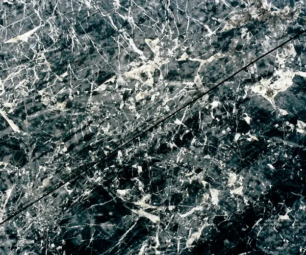

Chapter I · Apuan Alps HeritageMarble Elegance
Dramatic Calacatta Oro, Sahara Noir, and Verde Alpi veins rendered across 6 mm and 12 mm sintered slabs. Ideal for continuous waterfall islands, floor-to-ceiling bath walls, and formal foyers.
Specify Marble Elegance